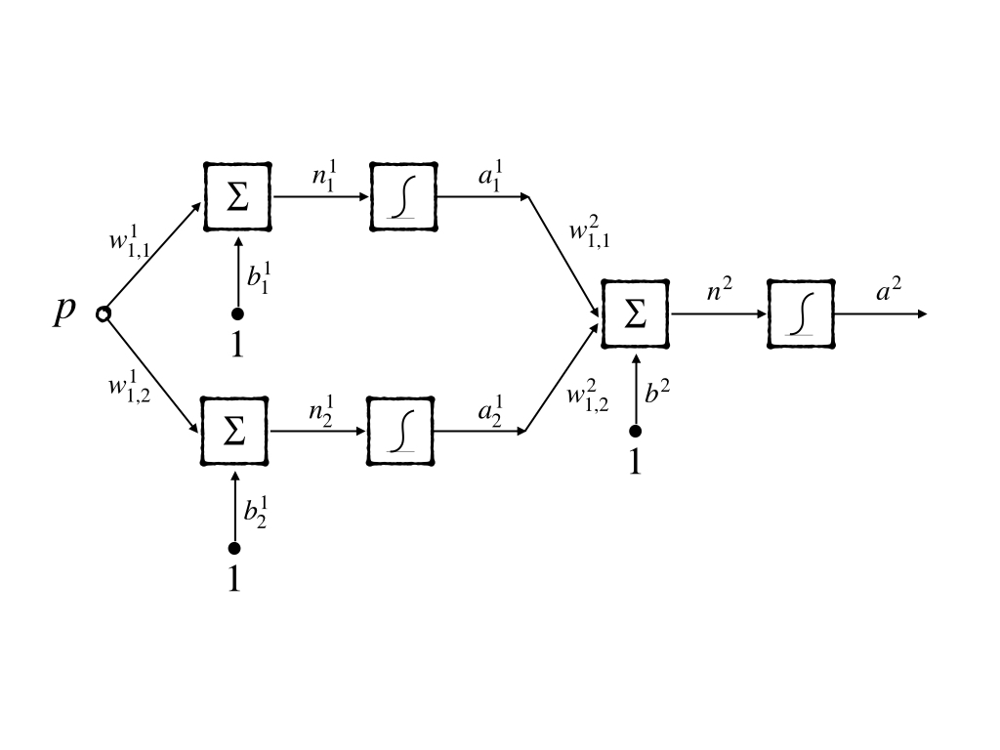
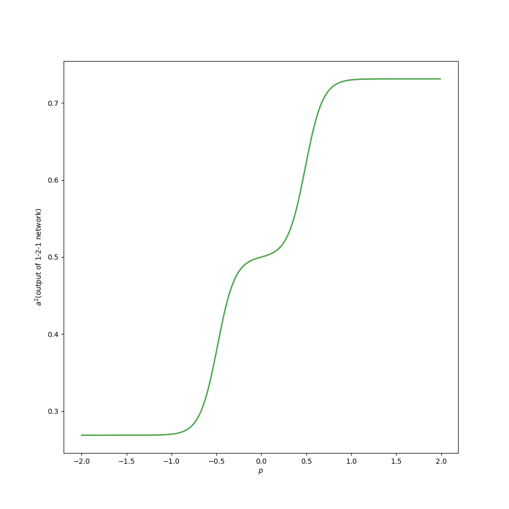
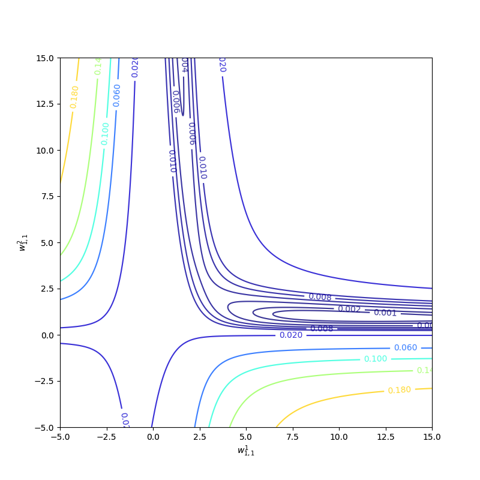
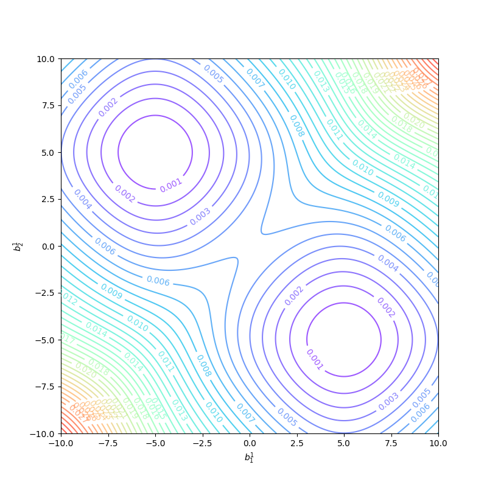
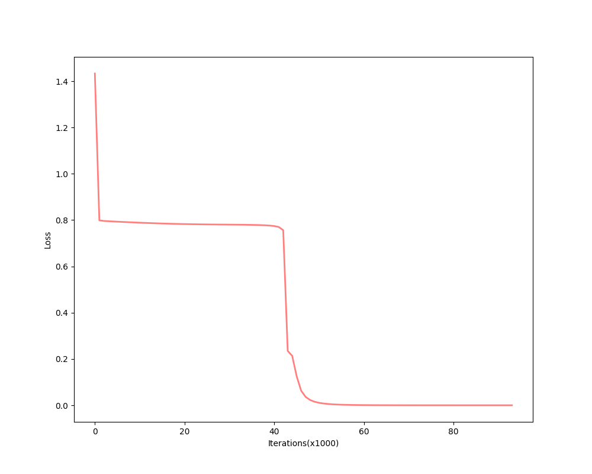
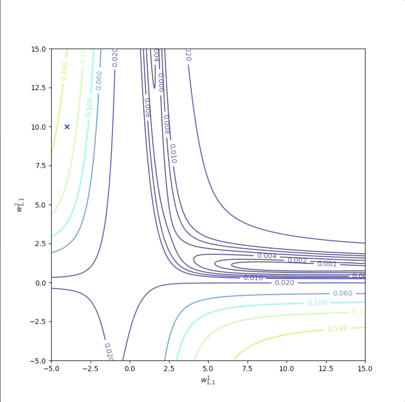
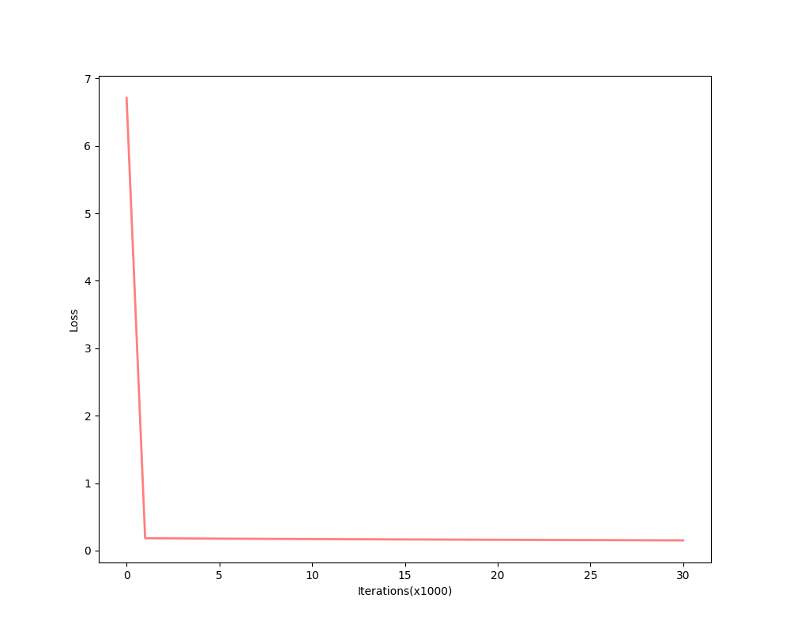
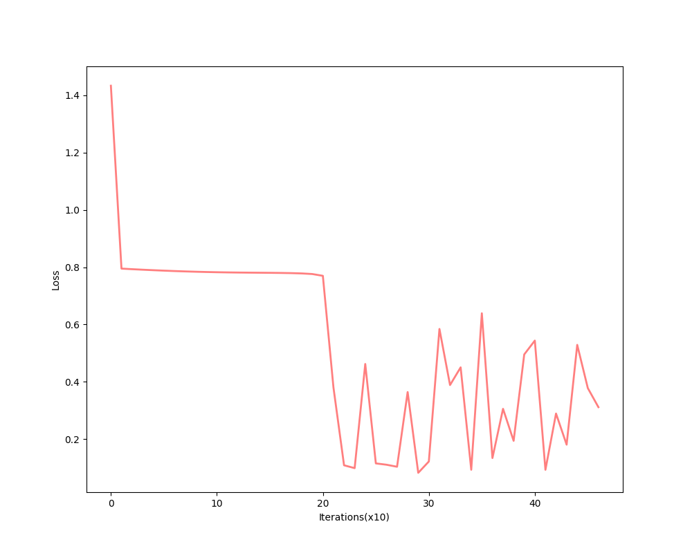

Drawbacks of Backpropagation
Keywords: Backpropagation, BP
Speed Backpropagation up 1
BP algorithm has been described in ‘An Introduction to Backpropagation and Multilayer Perceptrons’. And the implement of the BP algorithm has been recorded at ‘The Backpropagation Algorithm (Part I)’ and ‘The Backpropagation Algorithm (Part II)’. BP has worked in many applications, but there are too many drawbacks in the process. The basic BP algorithm is too slow for most practical applications that it might take days or even weeks in training. And these following 4 posts are some investigations to make the BP algorithm more practical and to speed it up.
In the post ‘Backpropagation, Batch Training, and Incremental Training’, the BP approximation example had shown that the algorithm converged very slowly. BP is a variation of LMS and LMS is a variation of ‘steepest descent’. So BP is a kind of steepest descent, and the difference between them is the calculation of derivatives. Steepest descent is the simplest and the slowest, while Newton and conjugate algorithms are faster. Then inspiration comes to us whether these algorithms can be used in speeding up the convergence of BP.
Research on faster algorithm falls on rough two categories and some directions would be discussed:
- Development of heuristic techniques
- varying learning rate
- momentum
- rescaling variables
- The standard numerical optimization technique
- find a numerical optimization technique already exists. ‘Reinvent the wheel’ is a good and bad idea.
- Conjugate gradient algorithm
- Levenberg-Marquardt algorithm
Backpropagation is called ‘back’ because in the calculation of the derivative of the sensitivities in the hidden layer are calculated by its next layer neurons that have connections with it. And the weights and biases updating process of BP is the same as the steepest descent. So we name the standard backpropagation algorithm steepest descent backpropagation and SDBP for short.
Drawbacks of Backpropagation
LMS guarantee to converge that minimize the MSE under the condition that the learning rate $\alpha$ is small enough. MSE is a quadratic function that has always a single stationary point and constant Hessian. Because Hessian matrices of quadratic functions do not change, so the curvature of functions would not change and their contours are elliptical.
When BP is used in a layered network, it degenerates to the LMS algorithm. The MSE of the single-layer network is quadratic. So it has a single stationary point and constant curvature.
But when the network has more than one layer, MSE of it is no more quadratic. MSE of multiple layers network has many local minimum points and curvature varies widely in a different region of parameter space. Now let go to look at the surface of MSE of multiple layers network. The simplest network 1-2-1 would be our example and its abbreviated notation is:

the transfer functions of both the hidden layer and the output layer are log-sigmoid function. And in the following experiment the function to approximate has the same architecture of the 1-2-1 network and its parameters are:
Then in this task, the global minimum point is at equation(1). And in the interval $[-2,2]$ the target function looks like:

Because the target function to be approximated has the same architecture with our model, the 1-2-1 network can have the correct approximation where MSE is 0. Although this experiment is humble compared to practical applications, it can illustrate some important concepts.
To approximate the target function, we generate the inputs:
with equivalent probability and the corresponding outputs. The performance index is the sum of square error which equals to MSE.
There are 7 parameters in this simple network model totally. However, we can not observe them all at one picture. We set $b^1{1},w^1{1,2},b^1{2},w^2{1,2},b^2$ to their optimum values given by equation(1) and leave $w^1{1,1}$ and $w^2{1,1}$ as variables. Then we get the contour map:

The performance index is not quadratic. Then it has more than one minimum, for instance, $w^1{1,1}=0.88$ and $w^2{1,1}= 38.6$ and other parameters are set as equation(1) is also a local minimum of the performance index. The curvature varies drastically over the parameter space and a constant learning rate can not suit the entire process. Because some regions are flat where a large learning rate is good, and some regions of curvature are high where a small learning rate is necessary. The flat region is a common condition when the transfer function of the network is sigmoid. For example, when the inputs are large, the surface of the performance index of the sigmoid network is very flat.
Because the 1-2-1 network has a symmetrical architecture, the surface of $b^1_1$ and $b^1_2$ is symmetric as well. and between these two local minimum there must be a saddle point which is at $b^1_1=0,b^1_2=0$:

So $b^1_1=0$ and $b^1_2=0$ are not good initial values. And if initial values of the parameters were large, the learning algorithm would start at a very flat region, this is also the nightmare for most algorithms. Trying several initial guesses is also a good method but when the whole training process needs days or weeks this method is impractical. A common method to initial parameters of networks is using small random numbers as a random number between $-1$ and $1$ with uniform distribution.
Convergence Example
The batching method has been introduced in ‘Backpropagation, Batch Training, and Incremental Training’. It is a generalized method that uses the whole training set of the ‘The Backpropagation Algorithm (Part I)’ and ‘The Backpropagation Algorithm (Part II)’, which uses one point of training set a time. The following process is based on the batching method.
Now let’s consider the parameter $w^1{1,1}$ and the $w^2{1,1}$ while other parameters are set to optimum solution as in equation(1).
The first example is with initial guesses $w^1{1,1}=-4$ and $w^2{1,1}=-4$ whose trajectory is labeled as ‘a’:

It takes a long time during the flat region and the entire process takes more than 300,000 epochs. And the sum of the square error of the performance index is:

The flat region takes a great part of the whole process.
The second example is with initial guesses $w^1{1,1}=-4$ and $w^2{1,1}=10$ whose trajectory is labeled as ‘b’:

It converges to another local minimum point but not the global minimum. And the sum of squire error of the performance index is:

whose final point can not reduce error to 0.
As we have mentioned above, to the flat region a bigger learning rate is required. Now let’s start at $w^1{1,1}=-4$ and $w^2{1,1}=-4$ as well. But when we increase the learning rate from $1$ to $100$, the algorithm becomes unstable:

and it’s error is not decrease after some iterations:

After all the experiments above, we found that flat regions are everywhere then a larger learning rate is required. However, a large learning rate makes the algorithm unstable. What we do next is to make the algorithm stable and fast.
References
1. Demuth, H.B., Beale, M.H., De Jess, O. and Hagan, M.T., 2014. Neural network design. Martin Hagan. ↩